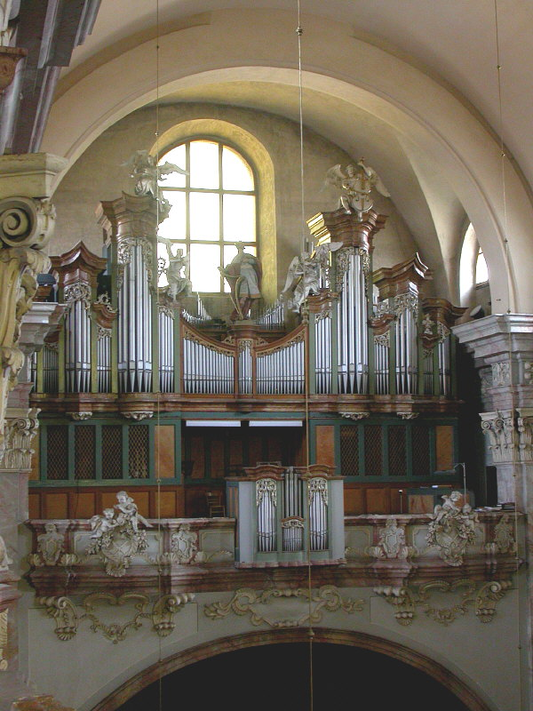
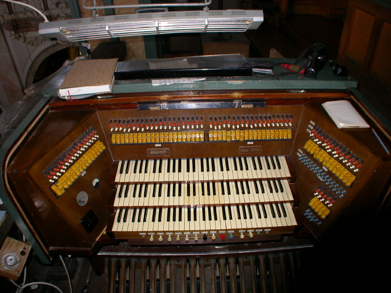

Rieger-Kloss, opus 3074

O původních varhanách v kostele sv. Vojtěcha v Opavě nalezneme jen velmi kusé informace. Měly být zhotoveny v dílně Václava Thiela a Anny Rischankové v roce 1720 jako dvoumanuálové s 28 rejstříky. Jiné prameny uvádějí jako stavitele jednoho z klášterních jezuitů. V roce 1893 pak zde postavila varhany krnovská firma Gebrüder Rieger, opět s 28 rejstříky, 462 cínovými a 114 dřevěnými píšťalami. Kovové píšťaly potkala válečná rekvizice. Současný nástroj postavila firma Rieger - Kloss pod opusovým číslem 3074, má dva hrací stoly (třímanuálový elektrický a jednomanuálový "záložní" pneumatický). Traktura (tónová i rejstříková) je elektropneumatická, vzdušnice kuželkové. Nástroj má 51 znějících hlasů a 5485 píšťal. Dispozice: |
| I.
manuál |
II.
manuál |
III.
manuál |
||||||
|
|
|
|
||||||
| 1. |
Kvintadéna | 8' |
17 |
Principál | 16' |
38 | Kvintadéna | 16' |
| 2. |
Kryt trubicový | 8' |
18 |
Burdon | 16' |
39 | Principál flét. | 8' |
| 3. |
Principál | 4' |
19 |
Prncipál | 8' |
40 | Kryt dřevěný | 8' |
| 4. |
Flétna zobcová | 4' |
20 |
Flétna dutá | 8' |
41 | Viola da Gamba | 8' |
| 5. |
Flétna rour. | 2 2/3' |
21 |
Roh kamzík | 8' |
42 | Vox celestis 1-2x | 8'+8' |
| 6. |
Oktáva | 2' |
22 |
Salicionál | 8' |
43 | Oktáva | 4' |
| 7. |
Piffaro 2x | 2'-1' |
23 |
Oktáva | 4' |
44 | Roh noční | 4' |
| 8. |
Kvinta malá | 1 1/3' |
24 |
Flétna trubicová | 4' |
45 | Nasard | 2 2/3' |
| 9. |
Akuta 6x | 1'-4' |
25 |
Kvinta velká | 2 2/3' |
46 | Syrinx | 2' |
| 10. |
Roh křivý | 8' |
26 |
Superoktáva | 2' |
47 | Flétna lesní | 2' |
| 11. |
III. - I. | 8' |
27 |
Flétna plochá | 2' |
48 | Tercie | 1 3/5' |
| 12. |
I. | 16' |
28 |
Kornet 4-6x | 8' |
49 | Sedecima | 1' |
| 13. |
I. | 4' |
29 |
Mixtura 6-8x | 1 1/3'-4' |
50 | Mixtura 5-7x | 11/2'-4' |
| 14. |
III.-I. | 16' |
30 |
Trompeta | 8' |
51 | Cymbál 3x | 1/5'-2 2/3' |
| 15. |
III.-I. | 4' |
31 |
III.-II. | 8' |
52 | Šalmaj | 8' |
| 16. |
Tremolo I. | 32 |
I.-II. | 8' |
53 | Klarina | 4' |
|
33 |
II. | 4' |
54 | III. | 16' |
|||
34 |
III.-II. | 16' |
55 | III. | 4' |
|||
35 |
III.-II. | 4' |
56 | Tremolo III. | ||||
36 |
I.-II. | 16' |
||||||
37 |
I.-II. | 4' |
||||||
| Pedál |
||||||||
| |
||||||||
| Bas akustický | 32' |
Mixtura velká 6x | 2 2/3' |
|||||
| Principál bas | 16' |
Pozoun | 16' |
|||||
| Subbas | 16' |
Tromba basová | 8' |
|||||
| Burdon bas | 16' |
Trubka polní | 4' |
|||||
| Kvintbas | 10 2/3' |
I.-P | 8' |
|||||
| Oktávbas | 8' |
II.-P | 8' |
|||||
| Roh noční | 8' |
III.-P | 8' |
|||||
| Seskvialtera | I.-P | 4' |
||||||
| Chorálbas | 4' |
III.-P | 4' |
|||||
| Flétna principál | 2' |
|||||||
| Pomocná zařízení | ||||||||
| 3 volné kombinace | ||||||||
| Pevné kombinace: | ||||||||
| Pléno, Tutti | ||||||||
| |
|
|
||||||

Hrací stůl je umístěn ve výklenku po vzdušnicí a
orientován čelem do prostoru kostela. Rejstříky jsou ovládány pomocí sklopek
v hlavě a po stranách hracího stolu, volné kombinace pomocí barevně rozlišených
tahélek nad sklopkami. Přepínání kolektivů a kombinací je řešeno tlačítky
pod prvním manuálem. Na levém panelu je ukazatel crescenda a voltmetr
elektrické traktury. |
Kostel sv. Vojtěcha byl vybudován v letech 1676-1681
v duchu vrcholného italského baroka na místě původního kostela a dle předlohy
římského kostela Il Gesu, podle projektu stavitele italského původu Nicolasche
Braschy. Na sochařské a malířské výzdobě se podílela řada umělců té doby,
jako František Eckstein z Brna, Vavřinec Dinke s Janem Jiřím Lehnertem
z Opavy, Kristián Kniel s Ignácem Raabem. Chrám byl při válečných událostech
r. 1945 z opavských kostelů nejvíce poškozen, byla zasažena věž a její
pád prorazil klenbu, shořel hlavní oltář i část mobiliáře. V letech 1946-1947
byl kostel renovován. Boční oltáře byly vyzdobeny obrazy Valentina Držkovice,
Viléma Čecha a Jarmily Lukešové. |
Autor stránek děkuje panu Ing.
Karlu Blechovi, tutulárnímu varhanikovi chrámu za poskytnuté
fotografie a další informace k tomuto nástroji. |